ImageMagick Examples --
 Resize or Scaling (General Techniques)
Resize or Scaling (General Techniques)
Index
The foremost thing you should consider when specifying an image to resize is...
Do you really want to modify the image? Resizing will cause drastic changes to an image, and avoiding or minimizing unwanted 'artifacts' is of greatest importance. Perhaps just a slight Shave of the edges, or a more general Crop of the image will produce a better and more desirable outcome than a wholesale resize of the image. It generally will look better and the area left will be a perfect copy of the original. Because it is often better not to resize images...
![[IM Output]](dragon_sm.gif)

![[IM Output]](resize_dragon.gif)
![[IM Output]](../images/terminal.gif)
![[IM Output]](resize_terminal.gif) As you can see a 64x64 square image was NOT produced by "
As you can see a 64x64 square image was NOT produced by "
If you want you can force "
![[IM Output]](exact_dragon.gif) Only Shrink Larger Images ('
Only Shrink Larger Images ('
Another commonly used option is to restrict IM so that it will only shrink images to fit into the size given. Never enlarge. This is the '
![[IM Output]](shrink_terminal.gif) This option is often very important for saving disk space for images, or in
thumbnail generation, when enlarging images generally may not desirable as it
tends to produce 'fuzzy' enlargements.
This option is often very important for saving disk space for images, or in
thumbnail generation, when enlarging images generally may not desirable as it
tends to produce 'fuzzy' enlargements.
Only Enlarge Smaller Images ('
The inverse to the previous flag is '
Fill Area Flag ('
As of IM v6.3.8-3 IM now has a new geometry option flag '
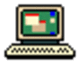
As it stands this option does not seem very useful, but when combined with
either a centered (or uncentered) "
![[IM Output]](fill_crop_dragon.gif)
![[IM Output]](fill_crop_terminal.gif) Also "
Also "
Percentage Resize ('
Adding a percent sign, '%', to the "
![[IM Output]](half_dragon.gif)
![[IM Output]](half_terminal.gif) Be warned however that the final pixel size of the image will be rounded to
the nearest integer. That is, you will not generate partial pixels along the
edge of the image! As a result the actual scale may not exactly match the
scaling factor you provide, and may even be slightly different for X and
Y directions, but it will be very close. (See Resize
using Distort below).
Be warned however that the final pixel size of the image will be rounded to
the nearest integer. That is, you will not generate partial pixels along the
edge of the image! As a result the actual scale may not exactly match the
scaling factor you provide, and may even be slightly different for X and
Y directions, but it will be very close. (See Resize
using Distort below).
Resize using a Pixel Area Count Limit ('
There is one final "
![[IM Output]](pixel_terminal.gif) Note that the final image size is not limited to 64 pixels in height or width,
but will have an area that is as close to (but smaller than) this size as IM
can manage. That means one dimension will generally be slightly larger than 64
pixels and one will be slightly smaller.
In some ways this is an ideal compromise for thumbnailing images. See Area Fit Thumbnail Size.
You can also add the '>' flag to only shrink images that have more than the
calculated number of pixels, while leaving images that are already smaller
than that size.
Note that the final image size is not limited to 64 pixels in height or width,
but will have an area that is as close to (but smaller than) this size as IM
can manage. That means one dimension will generally be slightly larger than 64
pixels and one will be slightly smaller.
In some ways this is an ideal compromise for thumbnailing images. See Area Fit Thumbnail Size.
You can also add the '>' flag to only shrink images that have more than the
calculated number of pixels, while leaving images that are already smaller
than that size.
Resize During Image Read
The resize operator can also be applied to images immediately after being read, before it is added to the current image sequence and the next image is read. That way a minimal amount of memory is needed to read in a lot of images. See Image Read Modifiers for more details. For example... The only problem with this technique is that no special resize options can be used, during the image read process.
Generally a single percentage value that is a multiple of 100% is used for the
image enlargement so as to ensure all pixels are enlarged by the same amount,
otherwise you can have different size pixel rows and columns producing large
scale Moiré pattern.
When shrinking images, neighbouring pixels are averaged together to produce a
new colored pixel. For example scaling an image to 50% of its original size
will effectively average together blocks of 4 pixels to create a new pixel
(assuming the image size is a multiple of 2 as well).
Caution is advised however as a scale reduced image can also generate
Moiré patterns, unless the new image is an exact integer reduction (a
technique known as 'binning'), which also requires the original image size to
be some exact integer multiple of the final size.
Also a real-world photograph that has been heavily minified using "
![[IM Output]](../images/rose.gif)
![[IM Output]](rose_pixelated.gif) You can use a mask to combine the above pixelated image with the original
image, so as to 'hide' a much smaller 'naughty' bit present in the original
image. See the Protect Someones Anonymity
example for a demonstration of using this technique.
The algorithm is also designed to loop over rows of pixels then columns, which
is inverted to that of "
You can use a mask to combine the above pixelated image with the original
image, so as to 'hide' a much smaller 'naughty' bit present in the original
image. See the Protect Someones Anonymity
example for a demonstration of using this technique.
The algorithm is also designed to loop over rows of pixels then columns, which
is inverted to that of "
The images above have been greatly enlarged
The above shows the result you get for 'purely averaged', vs, 'pixel mixed',
vs, 'linear interpolation'.
It also shows how Scale Operator is actually similar
to that of a Triangle Filter, but only when
doing very small downsizing of images. In other cases (strong downsize,
upsizing, or exact interger sizing) it will produce results more like that of
a Box Filter. Basically it generates something
that is more like a mix between Box and Triangle filters depending on exactly
how much the image is reduced in size.
You see similar effects when enlarging.
The images above have been greatly enlarged
When enlarging a Box Filter will never produce
'averaged pixels', only pixel row/column duplications.
Scale however will generate averaged color pixels along the edges, again much
like but not exactly the same as a Triangle
Filter. Of course this effect is only really visible for small,
non-integer enlargements, and in larger scalings, only along edges where in
a more typical case you may get one or two averaged pixels.
In summary: Scale is much much faster than
the normal Resize Operator, as it is less general in
its image processing requirments. But it is also a completely different
algorithm, producing a slightly different result when used to resize images
using non-integer scales.
For more detail see the Pixel Mixing
page, as well as the IM Forums Discussion, Upscaling a few pixels linearly.
Special thanks goes to forum user atnbueno, who pointed out the above difference.
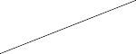
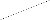
This is a typical effect your get with image sampling, and is known
as a sever Aliasing effect.
This type of information is especially useful for images that being reduced by
an integer division of the original image size. Such as when you are creating
or sampling a pixelated image, or De-interlacing a Video Frames.
Also as of that version you can control exactly which pixel in each sub-region
is selected using the define
"
![[IM Output]](scale_crosshatch.gif) 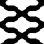
Note the Virtual Pixel setting was used
to ensure that magnify understood that this specific image 'wraps around' the
image edges.
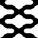
Note the Virtual Pixel setting was used
to ensure that magnify understood that this specific image 'wraps around' the
image edges.
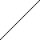
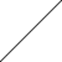
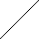
If you look at a magnification of the two results...
You can see the Adaptive Resized image on the
right is a lot cleaner looking and less blurry than the image produced on the
left using the normal "
Notice how "
![[IM Output]](animated_lqr.gif) Again notice how it tries to preserve the most complex parts of the image, as
the image gets compressed into a smaller and smaller area. That is, the
spaces in the title are preferentially compressed first, then the wizard's
arm, then the right side of the wizard, leaving the most complex middle part
of the wizard for the very end.
Especially look at how the stars get pushed together before they are finally
effected by the resampling pixel removal that liquid rescaling implements. (See
problems next)
You can think of liquid rescaling as trying to compress an image, like a
sponge, with the open areas being compressed first leaving the bulky and more
structured parts for last.
Seam Carving Problems
Liquid Resize, or Seam Carving, works purely by removing whole pixels from the
image. As such, like sampling, it will not generate or
merge colors together, and straight lines and patterns within the image may
become heavily distorted by the operation. Basically it can result in serious
Aliasing Effects, unless some method of
smoothing is also applied.
Generally however the aliasing effects will be grouped and localised to the
less complex areas of the image rather then spread thought the image. this is
the only reason it works so well!
As a 'seam' can zig-zag through the image, the seams, can and often appear to
go around complex objects, removing the space between the objects before
attempting to compressing the objects themselves. Note for example how the
word 'Image' in the above demonstration appears to get shoved under the other
letters in the title without too much distortion. However this side to side
movement limited to 45 degree angles.
For images with 'busy' backgrounds, and less 'busy' foreground objects such as
photos containing peoples faces, the energy function can assume that the
foreground object is less important that the background. This results in some
serious detrimental side effects, that may require human intervention to
resolve.
Again notice how it tries to preserve the most complex parts of the image, as
the image gets compressed into a smaller and smaller area. That is, the
spaces in the title are preferentially compressed first, then the wizard's
arm, then the right side of the wizard, leaving the most complex middle part
of the wizard for the very end.
Especially look at how the stars get pushed together before they are finally
effected by the resampling pixel removal that liquid rescaling implements. (See
problems next)
You can think of liquid rescaling as trying to compress an image, like a
sponge, with the open areas being compressed first leaving the bulky and more
structured parts for last.
Seam Carving Problems
Liquid Resize, or Seam Carving, works purely by removing whole pixels from the
image. As such, like sampling, it will not generate or
merge colors together, and straight lines and patterns within the image may
become heavily distorted by the operation. Basically it can result in serious
Aliasing Effects, unless some method of
smoothing is also applied.
Generally however the aliasing effects will be grouped and localised to the
less complex areas of the image rather then spread thought the image. this is
the only reason it works so well!
As a 'seam' can zig-zag through the image, the seams, can and often appear to
go around complex objects, removing the space between the objects before
attempting to compressing the objects themselves. Note for example how the
word 'Image' in the above demonstration appears to get shoved under the other
letters in the title without too much distortion. However this side to side
movement limited to 45 degree angles.
For images with 'busy' backgrounds, and less 'busy' foreground objects such as
photos containing peoples faces, the energy function can assume that the
foreground object is less important that the background. This results in some
serious detrimental side effects, that may require human intervention to
resolve.
It may not look like an improvement, in fact it has fuzzy edges, but it is an
exact resize without adjustments for a final integer image size, just as you
requested. Because of this the edges are fuzzy as the pixel colors are being
spread over fractions of a pixel size, and not just to whole integers.
Note that I used the 'plus' form of "
Note that as the top edge did not actually move, it remained relatively sharp,
while all the other edges became fuzzy. Here is a pixel magnification
of the top corner, showing the transparency that was added by distort to
provide sub-pixel resizing...
You can see that the top edge remained sharp, while the left (and all other
edges) are now semi-transparent.
And that is the point. You have exact control of the resize, and the final
sub-pixel location of the resulting image. Not just a quantized fit of the
resized image to an integer number of pixels. That is, the distort is an exact
re-scaling and positioning of the image to fractions of a pixel, allow you to
fit it precisely into other images.
This can become especially important when doing video work, where an imprecise
resize of embeded images can produce 'jarring' effects.
Affine, Transform
As of IM v6.4.2-8 the older "
If you look along the bottom edge of the rose, you will see that the Distort Operator actually produced a better
cleaner result than the Resize Operator. With very
little Blocking Artefacts that is common
when enlarging images.
Other than this bottom edge, the rest of the image is practically identical,
even when compared using a "
The NASA image "Earth's
City Lights" is a very extreme case where non-linear colorspace effects
have a big impact on the results of resizing the image.
Here we directly resize the image without colorspace correction...
![[IM Text]](earth_lights_direct.png) And here we magick from a non-linear sRGB, to linear RGB, then resize them,
and magick it back again...
And here we magick from a non-linear sRGB, to linear RGB, then resize them,
and magick it back again...
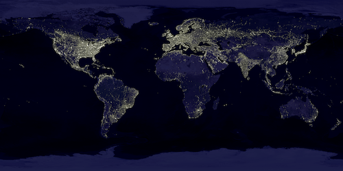
As you can see the 'lights' in the images are much much brighter as they are
not so heavilly influenced by the non-linear colorspace of the source image.
Though most images do not have as great an impact as can be seen in the above,
it is present, and can have many effects.
The main effect that can be seen from the non-linear effects of sRBG is that
darker colors are saved as much darker values (so as to be more perceptually
relevent. But as they are darker, they do not get processed correctly
mathematically, so the resulting sRGB image is darker than an image processed
in linear colorspace like RGB (or LAB or LUV).
Also see Color Processing Real
Images and Drawing with Gamma and Colorspace
Correction.
The same correct colorspace handling also applies to the use of distort
(elliptical filter), image blurring, and can have great effects on image
quantization, dithering and ordered dithering. This is looked at in detail
in resampling filters.
WARNING: RGB colorspace may produce clipping problems along edges involving
strong primary color changes (not just between black and white). See the next
section.
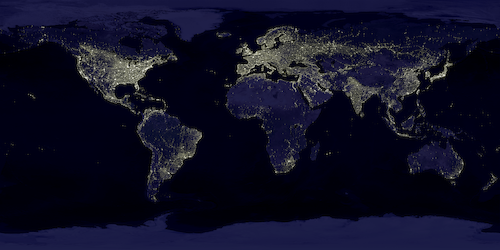
An alternative to the gamma inverse operation "
For resize involving 'sharpening' resampling filters (very commonly used),
using Lab colorspace will also moderate extreme intensity changes, that can
generate overly strong (and range clipped) Ringing Artefacts, in the primary RGB colors.
For example...
As you can see while the edge of the rose was clipped in linear RGB
colorspace, it was not clipped in LAB colorspace.
In RGB colorspace the bottom edge of the rose sees a color change from near
pure white to near pure red, causing a strong (negative) change in the 'green'
and 'blue' channels. This produces a very strong 'negative lobe' ringing
effect which is then clipped in RGB colorspace. The final result is a severe
color distortion, due to the filters sharpening effect.
In LAB colorpsace, the shift from white to red is not nearly as strong in
either intensity or in the color channels, and so while we get good sharpening
in the intensity, neither it nor the color channels is clipped, thus avoiding
color distortion.
The result is a far better resized image, with a more appropriate sharpening
effect from the filter. Simply by separating intensity from color.
See Colorspace for more
information about these two colorspaces..
Summary of Resizing using different colorspaces
Well because like sRGB, LAB and LUV colorspace is a non-linear perceptual
colorspace! And the mathematics was only ment to be applied to linear values.
For example here is the results of resizing the "Earth's
City Lights" image in '
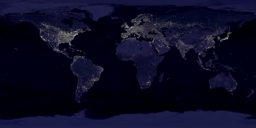
The result is practically identical to what you get if you had resized
directly in the perceptual sRGB colorspace.
But is resizing in a perceptual colorspace really a bad thing? Really that is
a debatable point. It seems avoiding color channel clipping, while
color slew (unequal changes to differnet color channels) is less important
But then a LAB and LUV images are linear, perceptually! As such perhaps
blending colors (which is what the Resampling
Filters actually do) in a linear-perceptual colorspace may actually be
a good thing to do.
Just one final point, sRGB is only perceptually-linear in intensity along the
primary color components. It is not actually perceptually-linear in color, so
it remains a bad colorspace to doing any form of image resizing.
Nicolas Robidoux summed it up nicely with...
Essentially what the final example in the above does is to decrease the
contrast of the image, compressing mid-tone greys into a tighter linear range,
while bringing the extreme values further from the clipping edges, before
resizing. It then removes that modification afterward. This in turn
de-emphases the extreme effects of color values, while still allowing the
filter to process the mid-tones, in a linear fashion, so as to reduce color
distortions.
In many ways this is similar to resizing images in the default non-linear sRGB
colorspace (which is a far too common practice), but works equally well for
both bright and dark ringing artifacts. That is it is symmetrical over the
whole range of color values, where as resizing in sRGB colorspace works only
from the lower dark end of the color range (blue and green values in the
above). That is it is a much more controlled technique.
It has also been commented that that this sigmoidal variation may only work
well for enlargements. Also try different values for the sigmoidal contrast
intensity (6.5 in the above) for different images.
Remember, just as with every resize technqiue, the results are highly
subjective, and may not be good for all image types.
As you can see sharpening the image after the resize improves the results.
Looking at the stars and hat details in particular. You get a very good sharp
image without any aliasing, ringing or even dimming of effects.
While a Spline Filter is not particularly
good filter to begin with, this method of sharpening (actually 'unsharping')
will work for ANY filter. It also provides more controls to fine-tune the
result.
In actual fact this is what '
The solution is rather tricky, as the normal user requirement when
resizing images is to fit the whole of an image into a given size. As the
aspect ratio of the image is preserved, that leaves extra, unused space in the
area you are trying to fill.
Here we try to resize an image to fill a 80x80 box.
In the above we added a backdrop canvas to pad out the unused parts of the
resize box to show the space we wanted the image to fill, but it wasn't
filled, as it preserved the image's aspect ratio.
Now if all your images are either landscape style (they are wider than they
are high) then you can of course just resize the image to fit either the
height or width of the area, then use "
The problem is that, the above will only handle landscape style images. It
will fail badly if the image is portrait style (higher than it is wide).
This of course can be solved in a script by first getting the image's
dimensions, and then picking the right method to fit the image into the space
needed. But a better solution would be to have IM do all the work for all
images.
The solution within IM is to process the image by resizing each of the images
dimension separately. Then picking the larger image of the two results.
To make this easier, resize itself has a built-in test option which will only
resize an image if that would make the image larger. This allows use a very
nifty solution to our problem.
In the above, the second resize in the series will only resize if the width
produced by the first resize was smaller than the area we are trying to fill.
The specific order of the resizes (height first, then width) was chosen, as
most images are photographs which are usually longer horizontally. With the
above ordering, such a case will result in the second resize operation being
skipped.
If your images are more often portrait images (longer vertically) then change
the arguments to resize the image by height first, then width. For example...
The result of both of these examples should be very similar, and the command
will work for both landscape and portrait styles of image, though it works
better for one sort.
The biggest problem with this method is that the image is now being resized 2
to 3 times, producing extra blurring and other possible artifacts in the final
result. To reduce this, the initial resizes are performed at double the final
dimensions, which assumes the original image is at least 3 or more times the
size of the final desired result. Not a problem for thumbnail production, but
something to keep in mind.
Resizing Images
The most obvious and common way to change the size of an image is to resize or scale an image. The content of the image is then enlarged or more commonly shrunk to fit the desired size. But while the actual image pixels and colors are modified, the content represented by the image is essentially left unchanged. However resizing images can be a tricky matter. It can modify images in very detremental ways, and there is no 'best way' as what is best is subjective as to what you actually want out of the resize process. Because there is no 'best' or 'perfect' way, there are a lot of options that you may like to consider. IM has always tried to provide options to give you the maximum scope of control in image resizing. There are hundreds of posiblilties, styles, and techniques, and even resize experts are consantally trying to find new and different ways of changing an images size. Of course for most people, the normal default options is good enough as they were designed with general use in mind. The resize operator has been very carefully designed to try to produce a very good result for real world images. That is not to say you can't use it for diagrams, or line drawings, though for that type of image you may need to use some of the more advanced options we'll look at later.The foremost thing you should consider when specifying an image to resize is...
Do you really want to modify the image? Resizing will cause drastic changes to an image, and avoiding or minimizing unwanted 'artifacts' is of greatest importance. Perhaps just a slight Shave of the edges, or a more general Crop of the image will produce a better and more desirable outcome than a wholesale resize of the image. It generally will look better and the area left will be a perfect copy of the original. Because it is often better not to resize images...
Resize will do nothing at all if the resized image is the same size.
The exception to this (there is always an exception) is if you actually
specify a Resampling Filter using a "-filter" setting. In that case
the normal "do nothing if image isn't resized" is overridden and the filter
will be applied. However, many filters (even the default filters) can blur
images slightly. It is part of their nature. So normally this
'short-circuit' for a no-op resize a good thing.
The argument to the resize operator is the area into which the image should be
fitted. This area is not the final size of the image but the maximum
size of the area into which the image is to be fitted. That is because IM
tries to preserve the aspect ratio of the image more than the final (unless
a '!' flag is given), but at least one (if not both) of the final dimensions
should match the argument given image.
So let me be clear...
Resize will fit the image into the requested size.
It does NOT fill, the requested box size.
Aspect ratio is preserved basically so that any circles in the input image
will remain a circle in the output image. That is the image will not be
squashed or squeezed, only resized, unless you tell it otherwise.
For example here I attempt to fit two source images, one larger image and one
smaller image into a square box 64x64 pixels in size.
It does NOT fill, the requested box size.
magick dragon_sm.gif -resize 64x64 resize_dragon.gif magick terminal_sm.gif -resize 64x64 resize_terminal.gif |
-resize". In fact the images
were only enlarged or reduced just enough so as to best fit into the given
size.
Ignore Aspect Ratio ('!' flag)If you want you can force "
-resize" to ignore the aspect ratio and distort the image so it
always generates an image exactly the size specified. This is done by adding
the character '!' to the size. Unfortunately this character is
also sometimes used for special purposes by various UNIX command line shells.
So you may have to escape the character somehow to preserve it.
magick dragon_sm.gif -resize 64x64\! exact_dragon.gif magick terminal.gif -resize 64x64\! exact_terminal.gif |
{kind=link}
>' flag)Another commonly used option is to restrict IM so that it will only shrink images to fit into the size given. Never enlarge. This is the '
>' resize option. Think of it only applying the resize to
images 'greater than' the size given (its a little counter intuitive).
magick dragon_sm.gif -resize 64x64\> shrink_dragon.gif magick terminal.gif -resize 64x64\> shrink_terminal.gif |
{kind=link}
The Only Shrink Flag ('>' flag) is a special character in
both UNIX Shell and in Window batch scripts, and you will need to escape
that character (using backslash '\>' in shell, and
'^>' in windows batch). It is also special in and
HTML web pages, so PHP scripts also may need some special handling.
|
<' flag)The inverse to the previous flag is '
<', which will only
enlarges images that are smaller than the given size, is rarely used.
The most notable use is with an argument such as '1x1<'. This
resize argument will never actually resize any image. In other words it's a
no-op, which will allow you to short circuit a resize operation in programs
and scripts which always uses "-resize". Other than that you probably do not actually want to
use this feature.
One such example of using this 'short circuit' argument is for the "-geometry" setting of
"montage". See Montage and
Geometry, caution needed for more details.
The Only Enlarge Flag ('<' flag) is a special character in
both UNIX Shell and in Window batch scripts, and you will need to escape
that character (using backslash '\<' in shell, and
'^<' in windows batch). It is also special in and
HTML web pages, so PHP scripts also may need some special handling.
|
^' flag)As of IM v6.3.8-3 IM now has a new geometry option flag '
^' which
is used to resize the image based on the smallest fitting dimension. That
is, the image is resized to completely fill (and even overflow) the pixel area
given.
magick dragon_sm.gif -resize 64x64^ fill_dragon.gif magick terminal.gif -resize 64x64^ fill_terminal.gif |
{kind=link}
{kind=link}
-crop" or "-extent" to remove the excess parts of the image, you can fit the
image so as to completely fill the area specified. Both the resize and the
final image size arguments should be the same values.
Though the "-crop" is most
logical, it may require an extra "+repage" to remove virtual canvas layering information. The
"-extent" does not
require this cleanup, but still allows the use of "-gravity" for positioning. See
Cutting and Bordering for more information.
magick dragon_sm.gif -resize 64x64^ \
-gravity center -extent 64x64 fill_crop_dragon.gif
magick terminal.gif -resize 64x64^ \
-gravity center -extent 64x64 fill_crop_terminal.gif
|
-extent" can be
used to pad out images that use the normal resize (with a "-background" color setting).
See Thumbnails, Fit to a Given Space
Summary, for more on this type of operation.
| Remember this requires IM v6.3.8-3 or greater to make use of it. Otherwise use the older Resizing to Fill a Given Space technique below. |
The Fill Area Flag ('^' flag) is a special character in Window
batch scripts and you will need to escape that character by doubling it.
For example '^^', or it will not work. See Windows Batch Scripting for this and
other windowing particularities.
|
%' flag)Adding a percent sign, '%', to the "
-resize" argument causes resize to scale the image by the amount
specified.
magick dragon_sm.gif -resize 50% half_dragon.gif magick terminal.gif -resize 50% half_terminal.gif |
| If you really want to resize image such that the final size looks like it has a partial pixel size differences, you can use the General Distortion Operator and specifically the Scale-Rotation-Translate (see Distort Resizing below). |
The Percentage Resize Flag ('%' flag) is a special character in
Window batch scripts and you will need to escape that character by doubling
it. For example '%%', or it will not work. See Windows Batch Scripting for this and
other windowing particularities.
|
All these 'flag' options '!', '<',
'>', '^', '%', and
'@' are just on/off switches for the "-resize" operator. Just the
character's presence (or absence) in the resize argument is what matters,
not their position. They can appear at the start or end of the argument, or
before or after individual numbers (though not in the middle of a number).
That is, '%50' has exactly the same effect as
'50%' though the latter is preferred for readability. Also
'50%x30' actually means '50%x30%' and NOT 50%
width and 30 pixel high as you might think.
This is the case for all IM arguments using a 'geometry' style ('WxH' or
'+X+Y') of argument. However offsets such as '+X+Y' are never treated as
a percentage.
|
@' flag)There is one final "
-resize" option flag. The "at" symbol '@', will
resize an image to contain no more than the given number of pixels. This can
be used for example to make a collection of images of all different sizes
roughly the same size. For example here we resize both our images to a rough
64x64 size, or 4096 pixels in size.
magick dragon_sm.gif -resize 4096@ pixel_dragon.gif magick terminal.gif -resize 4096@ pixel_terminal.gif |
{kind=link}
| Unfortunatally the '<', enlarge smaller images, flag is currently ignored when using 'Area Resize'. |
The resize operator can also be applied to images immediately after being read, before it is added to the current image sequence and the next image is read. That way a minimal amount of memory is needed to read in a lot of images. See Image Read Modifiers for more details. For example... The only problem with this technique is that no special resize options can be used, during the image read process.
| Resize and transparency posed a problem for ImageMagick before v6.2.4, producing a black halo effect around light colored objects on transparency. This was researched and finally fixed from that version onward. For more detail of this old bug see Resize Halo Bug |
Other Resize Operators
Geometry - Resize just the last image
Geometry is a very special option. The operator behaves slightly differently in every IM command, and often in special and magical ways. The reasons for this is mostly due to legacy use and should be avoided if at all possible. First, in "display" it is used to size and position the window of
the image being displayed. This was its original usage and meaning when IM was
first started. It was from this that its other 'resize' capabilities came
about.
For "montage" "-geometry" is a setting that is
saved until all the arguments have been read in. At this point it then
defines the final tile (cell) size (or leaves it up to "montage"
to work out) while the position arguments are used to specify the space
surrounding the tile cells. See Montage
Control Settings.
In "composite", "-geometry" is also saved
until the end of arguments have been reached. Then it is used to resize and
position the overlay image (the first image given) before it is overlaid onto
the background image (the second image). For example see Composite Multiple Images.
As you can see it is used as a 'setting' in most IM commands, but in
"magick" "-geometry" is both a special image resizing operator and a
positioning setting.
What it does is to "-resize" just the last image in the current image sequence.
This is the only image processing operator that is designed
specifically to effect just the one image (the last one), in the current image
sequence.
To complicate this special option further, the positional parts of the
"-geometry" option is
saved by "magick" command, just as it is in "composite". That is, any position is
preserved for later use by the "-composite", to position the 'overlay' image, (the second last
image in the current image sequence) over the 'background' image (the first
image in the image sequence).
For this reason, you should limit the use of "-geometry" in
"magick" commands to just before a "-composite" or "-layers composite" operations.
To summarize, this operator is only really useful after reading or creating a
second image, just before you perform some type of Alpha Composition to process with those
images.
For practical examples of using "-geometry" to resize/position images see Compositing Multiple Images.
Thumbnail - Resize with profile stripping
The "-thumbnail"
operator is a variation of "-resize" designed specifically for shrinking very very large
images to small thumbnails.
First it uses "-strip" to
remove all profile and other fluff from the image. It then uses "-sample" to shrink the image down
to 5 times the final height. Finally it does a normal "-resize" to reduce the image to
its final size.
All this is to basically speed up thumbnail generation from very large files.
However for thumbnails of JPEG images, you can limit the size of the image
read in from disk using the special option "-define
jpeg:size={size}" setting. See Reading JPEG Images for more details.
As such this speed improvment is rarely needed for JPEG in thumbnail
generation, though profile stripping is still very important.
For other image formats, such as TIFF, both profile stripping and speed
improvement is still vitally important. As such it is still the recommended
way to resize images for thumbnail creation.
Before IM v6.5.4-7 the "-thumbnail" would strip ALL profiles from the image, including
the ICC color profiles. From this version onward the color profiles will be
preserved. If the color profile is not wanted then "-strip" all profiles.
|
Resample - Changing an image's resolution
Just as in the previous alternative resize operators, "-resample" is also a simple
wrapper around the normal "-resize" operator.
Its purpose however is to adjust the number of pixels in an image so that when
displayed at the given Resolution or Density
the image will still look the same size in real world terms. That is, the
given image is enlarged or shrunk, in terms of the number of pixels, while the
image size in real world units will remain the same.
It is meant to be used for images that were read in from, or will be written
out to, a program or device of a particular resolution or density. This is
especially important for adjusting an image to fit a specific hardware output
device, whether it is a display, or printer, or a postscript or PDF image
format of a specific resolution. Just remember the real world size of the
image does not change, only its resolution and of course the number of pixels
used to represent the image.
For example, suppose you had an image that you scanned at a 300dpi (dots per
inch). The image was saved with this resolution (density) or when you read it
into IM, you specified it as a 300dpi image (using "-density"). Now you decide to
display it on a screen that has a resolution of 90dpi, so you do a
"-resample 90". IM will now resize the image by 90/300 or to 30%
of the images original size and set the images new density to 90dpi. The
image is now smaller in terms of the number of pixels used, but if displayed
on a 90dpi display will appear at the same physical size as the original image
you scanned. That is, it now has a resolution appropriate for a 90dpi
display, so it will be displayed to the user at its original real world size.
A "-units" setting (with
arguments 'PixelsPerInch' or 'PixelsPerCentimeter')
may be required in some situations to get this operator to work correctly.
This setting can also be important for output to Postscript and PDF image
file formats.
Note that only a small number of image file formats (such as JPEG, PNG, and
TIFF) are capable of storing the image resolution or density with the image
data.
For formats which do not support an image resolution, or which are
multi-resolution (vector based) image formats, the original resolution of the
image must be specified via the "-density" attribute (see Density
Image Meta-data) before being read in. If no density attribute has been
set IM will assume it has a default density of 72dpi. Setting the density
AFTER reading such an image will only affect its output resolution, and not
affect its final size in terms of pixels.
Scale - Minify with pixel averaging
The "-scale" resize
operator is a simplified, faster form of the resize command.
When enlarging an image, the pixels in the image are replicated to form a
large rectangular blocks of color. Which is great for showing a clean
unblurred magnification of an image.
For example here is a magnified view of one of the built-in tile patterns...
|
|
For example here I badly scaled a smooth looking '50% gray checks' pattern,
using a size that was not a multiple of the original images size.
|
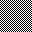
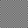 |
{kind=link}
{kind=link}
-scale" tends to look overlay
sharp, with aliasing ('staircase') effects along sharp edges.
The pixel averaging of "-scale" allows it to generate 'pixelated' images. You basically
reduce the size of the image to average the pixels, then enlarge again back to
the image's original size.
magick rose: -scale 25% -scale 70x46\! rose_pixelated.gif |
-resize". This may allow "-scale" to handle a "mpc:" disk cached image better.
Up until IM v6.4.7 the "-scale" still contained the old Resize Halo Bug.
|
Scale Internals (pixel mixing)...
In many ways the Scale Operator is similar to the normal Resize Operator, but using a 'Box' Resampling
Filter. However it actually uses a completely different algorithm that is
slightly more accurate in its results than that produced by a Box Filter.
The way the Box Filter works is to simply average any pixel (sample) that
falls within the filters 'support window' (See Filter Support Expert Control. This means that when shrinking an image by
a very small amount, a Box filtered Resize will only produce either exact
pixel values, or an perfectly averaged pixel value.
The Scale Operator however uses a different algorithm
that is known (for want of a better name) Pixel Mixing.
Rather than generate the colors based on a 'average of pixels', within the
'support window' it uses a more accurite 'area of pixels' within the support
window.
For example here I take 'checker board' pixel pattern, and shrink it by
2 pixels, comparing result of Scale against resizing
using very simple Box & Triangle Filters.
magick -size 10x10 pattern:gray50 checks.gif magick checks.gif -filter box -resize 8x8 checks_box.gif magick checks.gif -scale 8x8 checks_scale.gif magick checks.gif -filter triangle -resize 8x8 checks_triangle.gif |
![[IM Output]](checks.gif)
10 pixel 'hash' |
|
![[IM Output]](checks_box.gif)
Box Filtered Resize |
![[IM Output]](checks_scale.gif)
Pixel Mixing Scale |
![[IM Output]](checks_triangle.gif)
Triangle Filter Resize |
magick -size 8x8 pattern:gray50 checks_sm.gif magick checks_sm.gif -filter box -resize 10x10 checks_sm_box.gif magick checks_sm.gif -scale 10x10 checks_sm_scale.gif magick checks_sm.gif -filter triangle -resize 10x10 checks_sm_triangle.gif |
|
10 pixel 'hash' |
|
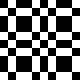
Box Filtered Resize |
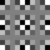
Pixel Mixing Scale |
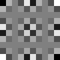
Triangle Filter Resize |
{kind=link}
{kind=link}
{kind=link}
Sample - Resize by row/column replication/deleting
The "-sample" resize
operator is the fastest resize operator, especially in large scale image
reduction. In fact it is also even faster than the "-scale" operator (see above).
When enlarging or magnifying an image it only performs does pixel replication
(as per the Box Filter, generating rectangular
'blocks' of pixel colors. However when shrinking an image "-sample" simply deletes rows and
columns of pixels.
Because whole rows and columns of pixels are simply added or removed,
"-sample" will generate
no new or additional colors. This fact can be important for some image
processing techniques such as resizing GIF animations.
Another way of looking at it is that the image has single individual pixels
'sampled' in a very even regular pattern across the whole image. You can think
of the image as being divided into an array of regions, and one pixel from
each region is selected for the resulting image.
However this 'sampling' of individual pixels (or wholesale row/column
removal), can have rather horrible results, especially for images containing
thin lines (in terms of width in pixels).
For example, here I draw a line but then reduce the image size resulting in
only a line of dots.
magick -size 150x60 xc: -draw 'line 0,59 149,0' line_orig.gif magick line_orig.gif -sample 50x20 line_sample.gif |
{kind=link}
{kind=link}
Offset of the Sampled Pixel
As of IM v6.8.4-7, the exact pixel being sampled in each sampling sub-region, is now defined as being the pixel at the mid-point of each region (or top-left center pixel if the sub-region is an even number of pixels). That means if you make a single pixel sample of an image, you will get the middle pixel of the image.| Before IM v6.8.4-7 the pixel selected was the top-left pixel of each region. However there are reports of some version where this may have been the bottom-right, or it may have even been slightly variable due to bugs. |
sample:offset, which takes one or two percentage value(s)
('50' by default for mid-point).
Note a percentage is used as the in the general case the 'sampling
sub-regions' may not align with pixel bounds. That is why it is a percentage
is needed and not a 'pixel offset'. However if the image size is nicely
divisible by the number of samples then you can easily calculate exactly
which pixel you want from each sub-region.
For example if an image sampled so that you have 5 pixel sub regions, then
(For example, sampling an image that has 100 pixel across, down to 20 pixel
samples), then you can use an sampling offset percentage in the range 0 to
19.9 to select the first pixel in each region, 20.1 to 39.9 for second, and so
on. In other words you can use a percentage value of either 10,30,50,70 and 90
to exactly specify exactly which pixel you want from each constant sized
sampling region.
For more on sampling offsets see the IM Forum discussion
Sample Points.
Magnify - Pixel Scaling
The "-magnify" option
doubles the size of an image, but it does so by using a technique known as
"Pixel Scaling" using the Scale2X
algorithm. This algorithm tries to smooth the corners of pixels being
enlarged, without adding extra colors. As such very small pixelated images
enlarge more cleanly, while retaining the original colors and a "retro pixel
look" of the smaller image.
magick -size 8x8 pattern:CrossHatch30 -virtual-pixel tile \
-magnify -magnify -magnify magnify_crosshatch.gif
|
{kind=link}
| Before IM v6.8.4-10 magnify was just a wrapper around resize to double the size of the image. Not very useful and rarely used. Using "Pixel Scaling" makes this option a lot more useful. See IM Users forum on Pixel Scaling for more information. |
A "Minify()" function is also often available in API's that halve the size
of images but is just a wrapper around resize. However
"-minify" is not available from the command line API, at least
not at the time of writing.
|
Adaptive Resize - Small resizes without blurring
The "-adaptive-resize" operator uses the special Mesh Interpolation method to resize images.
For example here I resize a simple line, using first a normal "-resize", then again using
"-adaptive-resize".
magick -size 50x50 xc: -draw 'line 0,49 49,0' line_orig2.gif magick line_orig2.gif -resize 80x80 line_resize.gif magick line_orig2.gif -adaptive-resize 80x80 line_adaptive.gif |
{kind=link}
{kind=link}
{kind=link}
{kind=link}
{kind=link}
-resize" operator.
Basically the operator avoids the excessive blurring that a "-resize" operator can produce
with sharp color changes. This works well for slight image size adjustments,
particularly for magnification, and especially with images with sharp color
changes.
However as with all pixel interpolative methods, it will produce aliasing, and
Moiré effects when images are enlarged or reduced by more than 50%.
You can also generate the exact equivalent result using a Distort Resize operation but with the options "-filter point
-interpolate mesh". That is, resizing the image using
a simple Mesh Interpolation lookup method, rather
than a more complex resampling filter.
Interpolative Resize - Resize using an Interpolation Method
The "-interpolative-resize" operator is practically identical to
the previous Adaptive Resize operator.
However this operator will use the current "-interpolate" setting rather
than a fixed 'Mesh' interpolation method.
If you use a "-interpolate" setting of 'Nearest', you will essentually get the
equivelent of a Sample Operator. Similarly many of the
other Simple Interpolation Methods,
will equate to using the equivelent Interpolated Resize Filters. But there are a number of Interpolation
methods such as Mesh that have no equivelence as
a resize filter.
Liquid Rescale - Seam Carving
Just as Sampling an image resizes by directly removing or duplicating whole columns and rows from an image, the special IM operator "-liquid-rescale" also removes or duplicates columns and rows of
pixels from an image to reduce/enlarge an image. The difference is that it
tries to do so in a more intelligent manner.
Firstly, instead of removing a simple line of pixels, it removes a
'seam' of pixels. That is, the column (or row) that could zig-zag
through the image, at angles up to 45 degrees.
Secondly it tries to remove seams that have the 'least importance' in
terms of the image's contents. How it selects this is in terms of the image's
energy, or more simply, the amount of color changes a particular 'seam'
involves. The 'seam' with the least amount of changes will be removed first,
followed by higher 'energy' seams, until the image is the size desired.
For more detailed information of liquid resizing and seam carving see, Wikipedia: Seam Carving,
the YouTube Video
Demo, and the PDF
paper: Seam Carving for Content-Aware Image Resizing.
Here for example is the IM logo as it is resized smaller using the IM "-liquid-rescale"
operator.
magick logo: -resize 50% -trim +repage logo_trimmed.jpg magick logo_trimmed.jpg -liquid-rescale 75x100%\! logo_lqr.jpg magick logo_trimmed.jpg -sample 75x100%\! logo_sample.jpg |
|
Original |
|
Liquid Resize |
Sampled |
{kind=link}
{kind=link}
-liquid-rescale" preserved the complex wizard, while squeezing up
the less complex stars and title part of the image. It also squeeze the right
foot of the wizard slightly, producing a little jaggedness in the edge of the
cloak, just as it did to the wizard's thin but simple wand.
On the other hand the Sample Resize image, simply
removed equally spaced columns of pixels, which resulted in the whole image
becoming equally distorted. The stars are not preserved intact and all the
edges have distinct but uniform aliasing
effects.
Basically "-liquid-rescale" will produce a generally better looking
'squeezed' image without generating extra 'mixed colors' or blurring of the
image. However you can get some slight but localized aliasing effects in one
spot (the wizards wand in this case) rather than spreading that effect across
the whole image.
It will also expand images, by 'doubling' up the seams found within the image.
As you can see tries to first double the amount of space between the various
objects (where it can), spreading them out. Though in this case the left most
star and the 'm' becomes distorted as the 'seams' going through these 'low
energy' regions become grouped together.
Note however it will only double each seam once, and as such the technique
starts to break down when images are expanded too much. A better method is
often to resize the image larger first, then use liquid rescaling to reduce it
to the desired size. Or to use "-liquid-rescale" in
multiple smaller steps.
To show the effect of "-liquid-rescale" better here is an animation, as the same image is
resized down to a very thin image, then enlarged again. This animation was
created using the shell script animate_lqr.
| Liquid Rescaling, is currently a highly experimental operation added for IM v6.3.8-4. It requires the "liblqr" delegate library to be installed before it will work for you. At this time no expert user controls have been provided. Controls such as to modify the content energy function used, or use an user provided preservation/removal filter (adjusting that energy function), or access to the intermediate seam carved images, and functions that the library also provides. It is assumed that such controls will be provided in sometime in the future, as users demand them, and we get more internal control of the library functions. WARNING Do not expect this to remain, exactly as it is currently implemented. It is highly experimental, and is expected to change and expand in functionality. |
Distort Resize - free-form resizing
All the above resize methods all have one limitation which we touched on earlier, they will round the size of the new image to an integer number of pixels, then map the old image's pixels to the new pixel array. This has two effects. First when resizing to a very small size the X scale may not exactly match the Y scale of the resulting image (a slightly different aspect ratio). This difference is minor, and unless you get very small it is usually not noticeable. The other effect is that you cannot resize an image to fit an area that contains a partial pixel edge, which can be important in further processing, such image overlays. It also means you cannot use resize to just shift (translate) an image half a pixel to the right (without actual resize) even though the algorithm could quite easily do this. With IM v6.3.6 the General Distortion Operator "-distort"
will let you do this and more, using its Scale-Rotate-Translate distortion method. You can also do this using an
Affine distortion based on movements of
control points.
Note however that because the edge of the image can contain partial pixels,
the final image will probably be 2 to 3 pixels larger than you probably would
expect. The extra surrounding pixels will be mixed according to the current Virtual Pixel setting, which you typically
set to be transparent.
For example here I resize the rose image to 90% (.9) of its
original size, without rotation (0), shrinking it around the
center of the image (the default control point if not specified)...
|
![[IM Output]](rose_distort_scale.png)
|
+distort" to allow this image's
processing operator to set the final images size and offset on the Virtual Canvas correctly, for further processing
and layering. If this offset is not desired it can be removed using "+repage" operator. But if left in
place then the actual images location on the larger canvas will be preserved,
allowing you to exactly position the image correctly with its 'fuzzy edges'.
Here I resized it so the top left corner (0,0) was moved .5
pixels to the right (to .5,0) and the rest of the image scaled
around that control point...
|
![[IM Output]](rose_distort_shift.png)
|
| 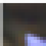 |
{kind=link}
| Technically, image resizing is a simplified form of Image Distortion, both of which are techniques of image resampling. It's very fast 2-pass filtering technique, is limited to orthogonally aligned pixel scaling, and an integer number of pixels in the final result. |
-affine" setting used with either "-transform" or "-draw" operators, provide a similar
free-form resize capability. However in reality it is equivalent to a calling
"+distort" with an
'AffineProjection'
distortion method. As such all the previous Distort notes apply.
It does require more mathematics making it hard for the typical user to use.
Generally you are better off using the above distortion method, which provides
a number of alternative methods of specifying the affine distortion to be
applied.
Distort vs Resize
If you actually want to do a direct comparison between using Distort vs Resize you will need to specifically limit the distortion of the image, so as to exactly match the resized image you care comparing it to. This is not a simple task. To make this easier a special Resize Distortion Method was added to IM v6.6.9-2. Here for example I greatly enlarge the built-in "rose:" using
a fast Resize, and then using Distort...
|
|
Resize (Lanczos - Sinc) |
![[IM Text]](rose_distort.png)
Distort (Lanczos - Jinc) |
{kind=link}
flicker_cmp" script.
However remember that Distort is much
slower than Resize, as it uses a more direct but much
more complex Area Resampling
technique, without the 2-pass speed optimizations that resize uses.
| The real difference in the above two images is that the Distort Operator uses a two dimensional Elliptical Area Resampling filter method (also known as cylindrical filtering or resampling) for its image processing. This is slower than the one dimensional, two pass resampling method used by all the other resize methods shown in this section. It is also why it produced a better result along the diagonal bottom edge of the enlarged rose image above. It is not limited to just horizontal and vertical filtering. You can see the effects this has on ringing in the examples on Ringing Artefacts. |
Resizing Techniques
Resizing with Colorspace Correction
While resize works very well, most people do not use it correctly. Even I normally just use resize directly on images, as is, and thus technically I resize images incorrectly. Images are typically stored using a non-linear "sRGB" colorspace, or with gamma correction. See Human Color Perception for details. But resize (like most other image processing operators) is a mathematically linear processor, that assumes that image values directly represent a linear color brightness. The colorspace "sRGB" is basically contains a gamma correction of roughly 2.2. Actually it is more complex than that involving two separate curves. See wikipedia, sRGB and W3org, sRGB the Default Colorspace of the Internet. As of version 6.7.5 ImageMagick follows this convention and defines the default colorspace of images (at least for most image file formats) to be sRGB. This means we simply need to use the "-colorspace" to transform the image to a linear space before doing
the resize.
| Using color correction on a low-quality Q8 version of IM (see Quality) is not recommended due to the loss of precision such a low memory quality provides. |
magick earth_lights_4800.tif -resize 500 earth_lights_direct.png |
magick earth_lights_4800.tif -colorspace RGB -resize 500 \
-colorspace sRGB earth_lights_colorspace.png
|
{kind=link}
In versions of IM older than v6.7.5, in which the default input colorspace was
'RGB'. The 'sRGB' colorspace actually meant
"converted from sRGB to linear-RGB". The result was the two labels were
swapped! Wierd but true.
Because of this older versions of ImageMagick would need to do the
above colorspace correction with those colorspace names swapped. Like this...
-colorspace RGB" operation was not actually
needed, as it was automatically performed when saving to PNG image file
format.
The above was developed from an IM Forum Discussion Correct Resize.
|
Resize with Gamma Correction
This is how to correctly resize images using gamma correction only. |
{kind=link}
-gamma 0.454545"
is to use "-evaluate POW 2.2".
Note that gamma correction is only a rough match to properly converting images
from/to sRGB colorspace, but it is so close that you would be hard pressed to
see any difference between colorspace vs gamma correction.
Gamma correction also does not play around with the IMv6 RGB/sRGB colorspace
settings, so may be a better choice when the exact version may be unknown.
You may also like to look at the "-auto-gamma" operator, which
tries to adjust the image, do as to produce equal amounts of light and dark
areas (assuming the image is in a linear colorspace).
Resizing in LAB colorspace
One problem with using sRGB, RGB or even XYZ colorspace for resizing or for any sort of image processing is that the 3 color channels not only represent color but also intensity or brightness. That means that if one channel becomes distorted (such as by being clipped) the pixel color will also become distorted and can result in a funny look. The LAB colorspace is not only a linear colorspace, but was designed so that intensity (L channel) is separated from two color channels (A* and B* channels). That means that if any one of the channels becomes clipped, it does not generate color skew. It also means that generally none of the channels are actually close to clip limits unless you specifically deal with pure black and white images, which is uncommon in real life images. As such by processing images using LAB colorspace, actually works better, and avoids clipping and color skew, that you may get when using a RGB or XYZ colorspace.| Before IM v6.7.8-2 LAB values for A* and B* channels was stored using signed integers, stored in an unsigned integer memory space. This created a discontinuity between negative and positive values, that did not allow normal processing to work, only image format converstions. This meant that in older versions of IM, image processing in LAB colorspace did not work, especially when a color involving both positive to negative values were involved. That when working with colors that change between blue-yellow and red-green. After this release the values were stored internally using a 50% bias, which removed that discontinuity, and thus allowing linear operations to work as expected. |
magick rose: -colorspace RGB -filter Lanczos -distort resize 300x \
-colorspace sRGB rose_distort_rgb.png
magick rose: -colorspace LAB -filter Lanczos -distort resize 300x \
-colorspace sRGB rose_distort_lab.png
|
![[IM Output]](../images/rose.png)
Original |
|
![[IM Output]](rose_distort_rgb.png)
RGB colorspace |
![[IM Output]](rose_distort_lab.png)
LAB colorspace |
Resize using LUV colorspace
As of IM v6.7.8-8 IM also implements a closely related colorspace LUV. They both designed to be perceptually uniform (linear), and even share the same critical intensity 'L' or 'Lighness' channel results, though calculate the color channels differently. The main difference is that LUV color axis were adjusted so as to have perceptually equal color deltas (color differneces), which results in a slightly different color scale to LAB colorspace, though intensity remains the same between the two. See Adams chromatic valence color space. The results for resizes between LAB and LUV is practically identical.
magick rose: -colorspace LUV -filter Lanczos -distort resize 300x \
-colorspace sRGB rose_distort_luv.png
|
{kind=link}
Summary of Resizing using different colorspaces
Or why not use LAB or LUV for resize?
Well because like sRGB, LAB and LUV colorspace is a non-linear perceptual
colorspace! And the mathematics was only ment to be applied to linear values.
For example here is the results of resizing the "Earth's
City Lights" image in 'Lab' colorspace.
magick earth_lights_4800.tif -colorspace Lab -resize 500 \
-colorspace sRGB earth_lights_lab.png
|
{kind=link}
| Generally, the linear light colour spaces (linear RGB and XYZ) produce exaggerated dark halos, and the "perceptual" colour spaces (sRGB, LAB, LUV) produce exaggerated light halos. If you think about it for a minute, this makes complete sense, because the perceptual colour spaces pack lots of bits at the darker end of the intensity spectrum, and "hollow out" the lighter end, so as to mimick the HVS (Human Visual System). So, 1 unit of dark overshoot gets you less "far" in sRGB than in linear RGB, but 1 unit of light overshoot gets you less "far" in linear RGB than sRGB. Sigmoidization (see next) treats dark and light overshoots equally, and generally dampens the extremes of both. |
Resizing using a Sigmoidal Colorspace
In a lengthy discussion on the ImageMagick Discussion Forums, Sigmoidal minimization of resampling filter haloing. A new technique has been developed in which rather than trying to resize images in a linear color space, the image is resized in a modified colorspace using the Sigmoidal Color Modifier Operator (-sigmoidal-contrast).
This can reduce the clipping of extreme halo or Ringing Artefacts that may develop along very sharp edges.
For example, here is a sequence of 'improving' resize techniques,
that have been discussed on the Digital Image Processing Forums...
magick rose: -colorspace RGB -filter Lanczos -resize 200x \
-colorspace sRGB rose_resize_RGB.png
magick rose: -colorspace RGB -filter Lanczos -distort resize 200x \
-colorspace sRGB rose_distort_RGB.png
magick rose: -colorspace RGB +sigmoidal-contrast 6.5,50% \
-filter Lanczos -distort resize 200x \
-sigmoidal-contrast 6.5,50% -colorspace sRGB rose_sigmoidal_RGB.png
|
![[IM Output]](rose_resize_RGB.png)
Resize (normal linear) |
![[IM Output]](rose_distort_RGB.png)
Distort (cylindrical) |
![[IM Output]](rose_sigmoidal_RGB.png)
Sigmoidal Variation |
| Sigmoidal transform essentually generates a special DIY non-linear colorspace, that builds on the previous results that was obtained when using a non-linear perceptual colorspace (sRGB). Note that resizing (distorting) an image with non-linear color channels in RGB colorspace, can lead to slightly different results in each color channel. This results in a slight color shift (as opposed to a color being clipped as we saw earilier). This is only a problem with non-linear colorspaces with mixed color-intensity channels, such as sRGB, or a sigmoidal colorspace. |
Unsharped Resizing (USM) -- Photoshop Resize Technique
Often resizing images (either smaller or larger) adds some fuzziness (Blurring Artefacts to the image. Because of this many people like to play around with the various filters (see Resampling Filters), to try and make the results sharper. But this can add other Resize Artefacts to the image results. One method that is commonly used is to sharpen the image after resizing. Typically this is done using the special and weirdly named, Unsharp Operation, which contains even more controls to control the quality of the results. For example, lets 'unsharp' the results of the very blurry 'Spline' filtered image...
magick logo: -filter spline -resize 150x logo_spline.png
magick logo: -filter spline -resize 150x \
-unsharp 0x1 logo_spline_unsharp.png
|
|
Spline |
|
Unsharped |
photoshop' does to improve the
quality of its resized images, though I do not know what settings it uses for
the Unsharp Operation. A technique known as
USM
The "GIMP" default (radius=6, amount=0.5,
threshold=0) for unsharp is equivalent to "-unsharp
12x6+0.5+0", and this is correct (other than ignoring that GIMP
sets a hard radius at twice sigma). However remember you really do not need to
specify the kernel radius in ImageMagick, so a value of "-unsharp
0x6+0.5+0" will work better.
See also the IM forum topic unsharp parameters in GIMP.
The post Image Resizing
suggests using "-unsharp 0x0.75+0.75+0.008" as being
good for images larger than 500 pixels.
While an Open Photography Forum discussion
Downsampling with ImageMagick suggests
"-unsharp 1.5x1+0.7+0.02".
Resizing to Fill a Given Space
Basically: Resizing a large image to completely fill a specific image size but cropping any parts of the image that do not fit.
As of IM v6.3.8-3 a new resize flag '^' will let you do this
directly as a single resize step. These examples represents an alternative
method that can be used for users with older versions of IM.
See Resize Fill Flag above.
|
|
![[IM Output]](space_resize.jpg)
|
-crop" to cut the image to fit it exactly.
|
![[IM Output]](space_fill.jpg)
|
|
|
|
![[IM Output]](space_fill_2.jpg)
|
Resizing Line Drawings
Doing a strong resize of an image containing thin lines can represent a big problem... Resizing images to very small thumbnails, causes thin lines that are only a few pixels wide to fade and disappear into the background. This can get so bad that I have seen thumbnails of a line drawing which looked completely blank! That is, every detail of the original drawing 'disappeared', making the thumbnail rather useless. If this is problem there are a few techniques that can help...- Resize then adjust contrast to make lines more visible. Though this will make the lines more aliased (staircased). It also has limits to just how far this technique can be used.
- Blur and threshold the image (a method very similar to morphological 'dialate' or 'erode') so as to produce make single pixel lines about 300% thicker. Now after resizing by 1/3 the image will be smaller but the lines will remain just as strong and visible as before.
- Thicken lines using Thicken Morphology techniques. You may like to do the resize in stages, thickening and resizing the image by 50% at a time until you get to the final size. Though as the spacing between the lines shrinks you may find you end up with more of a 'blob' than a line drawing. That is you may get the opposite problem. Adjusting the ratio of thickening to resize however should produce an acceptable result.
- Separate the line edging in an image from the areas of solid colors, and resize each by different methods (lines using the above). Afterward the two parts can be merged back together again, allowing you to preserve the line edging of the image. This will in effect reproduce the effect you often get when resizing vector images.
- Convert image to a vector image, then resize. This can be tricky but also can produce the best possible result for resizing line drawings, with perfect anti-aliased (sharp) edges, and clear images.